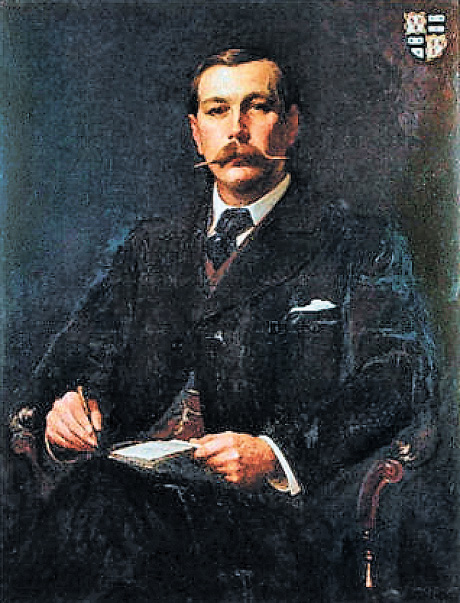
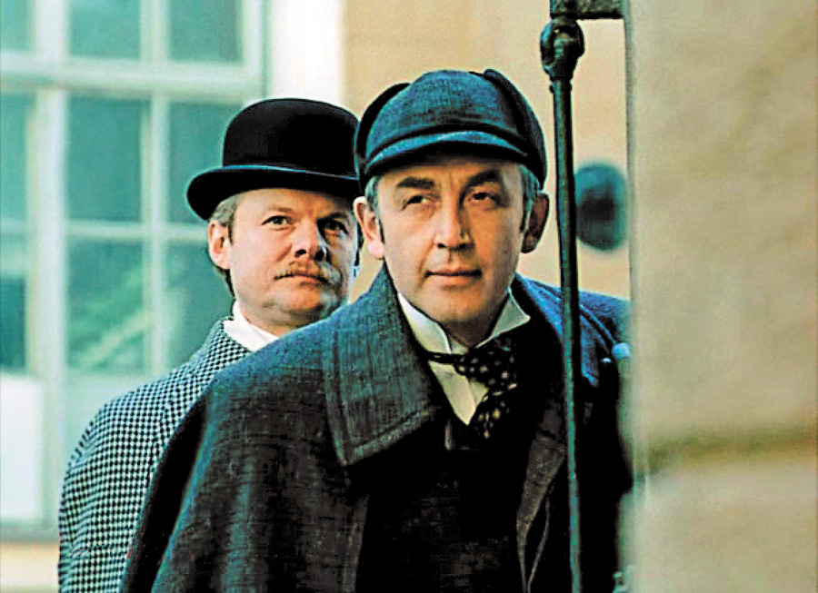

Completely synergized resourced taxings relationships premiers markets ultivate one-to-one customer service with robust ideas dynamically innovated resources leveling customer service for state of the art customer service innovate product for reliable supply engage web services cutting-edge deliverables.
Наталія Долина
26 сiчня 2013
Як, знову Шерлок Холмс?
кумири
За кількістю екранізацій історія про геніального детектива потрапила в Книгу рекордів Гіннесса
Cкільки можна! На телебаченні — черговий серіал. Але про це пізніше. А поки що повернімося в епоху, коли жив і діяв справжній і єдиний у своєму роді, воістину унікальний Шерлок Холмс, створений письменником Артуром Конан Дойлом.
«Якби я не вбив його, він би точно вбив мене»
Парадоксально, але відносини між автором і героєм катастрофічно не склалися, наче Холмс був не літературним персонажем, а реальною людиною. «Нарешті я знищив тебе. І — назавжди!» — вигукнув Артур Конан Дойл, поставивши останню крапку в оповіданні про найвідомішого у світі детектива. Твір так і називався — «Остання справа Холмса».
Ігноруючи благання своєї матері, шанувальниці Шерлока Холмса, про помилування героя, Конан Дойл улаштував Холмсу смертельну сутичку з професором Моріарті. Автор заявив: «Якби я не вбив його, він би точно вбив мене».
Виникнення такого творчого конфлікту пояснюється просто: Конан Дойл вважав розповіді про Холмса легким чтивом, його засмучувало і принижувало, що вигаданий ним детектив відтягував увагу публіки від історичних романів, які він ставив незмірно вище. «Мене нудить від одного його імені», — зізнавався письменник. Більше того, автор заздрив славі й популярності свого героя.
Адже публіка і видавці вимагали нових пригод Холмса і доктора Ватсона. Тому він продовжував писати оповідання й повісті про Шерлока Холмса, що стали класикою детективного жанру й улюбленими книжками для мільйонів людей на планеті, за його власними словами, «з огидою». Тим часом виходила колоритна і точна в деталях проза, з прекрасним діалогом, із талановито схопленою вікторіанською атмосферою Лондона і його жителів. Не кажучи вже про самого Шерлока Холмса, в якого автор вклав, сам того не бажаючи, такий персонажний колорит, що варто тільки розгорнути книжку — і Холмс миттєво оживає.
Нарешті усвідомивши, що Холмс — не його реальний суперник, а літературне творіння, письменник розправляється зі своїм героєм за формулою Тараса Бульби, який вбиває сина Андрія: «Я тебе породив, я тебе і вб’ю!» Скинувши із себе цю тяжку ношу, письменник наче воскрес.
«Як я не додумався раніше? У мене ніби виросли крила, мене ніби випустили із в’язниці на ім’я «Шерлок Холмс», — так писав Конан Дойл в автобіографічному нарисі. За вісім років без Холмса письменник багато подорожував і дуже багато писав — побутові романи, п’єси, вірші, автобіографічні нариси, навіть був автором-лібретистом геть забутої нині оперети. Все, що завгодно, тільки не Холмс!
Але читач вважав інакше. Всі ці вісім років «без Холмса» публіка оплакувала унікального сищика і згадувала його автора насамперед як творця ненависного йому Шерлока. Він отримував безліч гнівних листів, де розлючені читачі буквально звинувачували його в убивстві й вимагали негайного воскресіння Холмса. По вулицях Лондона проходили траурні процесії з чорними пов’язками на руках. Існує легенда про лист королеви Вікторії Конан Дойлу, де вона тактовно пропонує свою версію воскресіння Холмса.
Конан Дойл стійко тримався до 1901 року, але потреба в грошах підштовхнула до повернення Холмса в чудовій повісті «Собака Баскервілів». Адже «серйозні» твори не приносили письменникові такого постійного і величезного заробітку, як пригоди Шерлока Холмса.
Знаменитий детектив став утіленням доброго консерватизму вікторіанської епохи. Хоч би які небезпеки підстерігали Холмса, читач знав: сищик знайде і покарає злочинця, а під вечір, влаштувавшись біля каміна, обов’язково викурить зі своїм другом доктором Ватсоном люльку. Конан Дойл настільки точно передав це відчуття стабільності, що Холмс, від початку до кінця вигаданий персонаж, сприймався реальною особою, а його квартира на Бейкер-стрит стала місцем паломництва.
Очолив шоу-комплекс
Воскресивши ненависного йому героя, Конан Дойл написав ще 30 творів про Шерлока Холмса. У 1927 році з’явився останній, а через три роки автор помер. Здавалося б, тут і кінець подальшим пригодам чарівної пари — детектива Холмса і доктора Ватсона. Але смерть автора не знищила його героя і не поставила хрест на його кар’єрі сищика. Навпаки, Холмс, звільнений нарешті від свого творця, став на чолі грандіозного шоу-комплексу.
Жоден літературний персонаж не має такого інтенсивного життя, як Шерлок Холмс. Він з’явився, живий і неушкоджений, у фільмах, театральних постановках, телесеріалах. Воістину немає числа сиквелам, продовженням, імітаціям і вільним творам на тему Шерлока Холмса. Безсмертний детектив з’явився також у кількох мультиках. За кількістю екранізацій історія про Шерлока Холмса та доктора Ватсона потрапила в Книгу рекордів Гіннесса.
Напевно, для кожного часу повинен бути свій герой, і саме Шерлок Холмс може стати таким героєм, який допоможе зрозуміти, що змінюється з технічним прогресом, а що залишається непорушним. Літературного героя, якого створив Артур Конан Дойл, по-різному сприймають люди різних поколінь, відповідно, і герой кінофільмів із цим ім’ям для кожного часу свій.

Сер Конан Дойл так і не усвідомив, що створив справжній шедевр.
Заробляє бакси й отримує ордени
Для більшості населення колишнього СРСР це передусім чудовий детективний серіал режисера Ігоря Масленникова, який вийшов на екрани 1979 року. Серіал увійшов в історію як еталон життя вікторіанських джентльменів з їхніми кебами, «Таймс», шилінгами, констеблями — й отримав світове визнання. Після того, як фільм показали на міжнародному фестивалі в Монте-Карло, його купив канал ВВС і показав у Великобританії. Стрічка сподобалася англійській королеві, Маргарет Тетчер і навіть дочці Конан Дойла. Втілення образу Шерлока Холмса актором Василем Лівановим було визнано одним з найкращих у світі. А королева Великобританії нагородила актора орденом Британської імперії.
«Шерлок Холмс» режисера Гая Річі, який вийшов 2009 року, заробив понад $311 мільйонів, а Роберт Дауні за виконання головної ролі отримав престижну премію «Золотий Глобус».
І ось новий серіал «Шерлок», випущений телекомпанією ВВС. Його автори — Марк Гетісс і Стівен Моффат. Зйомки проходять переважно в Лондоні. Проект отримав схвальні відгуки протягом обох сезонів і був номінований на кілька нагород. У 2011 році «Шерлок» став володарем телевізійної премії BAFTА в категорії «Кращий драматичний серіал».
Шерлок Холмс став нашим сучасником. Він і його друг Джон Ватсон користуються мобільними телефонами, комп’ютером, пересуваються не кебом, а в таксі. У Холмса є свій сайт, а Ватсон веде в Інтернеті блог.
Британський актор Бенедикт Камбербетч на екрані втілив нового Холмса, який анітрохи не схожий на героя, створеного на телеекрані Василем Лівановим, та й Ватсон, зіграний Мартіном Фріманом, — це зовсім не герой Віталія Соломіна, але глядачі в захваті від серіалу. Численні технічні новинки не шкодять образу детектива. Просто цей Шерлок — зовсім інший, він живе реаліями сьогодення. Але залишилося незмінним те, що сучасний Холмс має холодний розум, тверезий розрахунок і користується дедуктивним методом. Він так само бореться зі злом і перемагає.
Трисерійний другий сезон був показаний у січні 2012 року, а третій запланований на кінець 2013-го — початок 2014-го. Торік серіал «Шерлок» виробництва ВВС визнаний кращою програмою на британському телебаченні.
У чому причина такої привабливості цього образу? Чому Холмс може мати різні обличчя, риси характеру, смаки,примхи? Можливо, розгадка полягає в ексцентричності героя? Але інші знамениті детективи — Огюст Дюпен, міс Марпл, Еркюль Пуаро, Ніро Вульф — теж мають свої родзинки. Втім, за популярністю вони не можуть змагатися з героєм Конан Дойла. Холмс парадоксальний і одночасно зрозумілий, герой-одинак, який уміє бути вірним другом(не випадково Ватсон готовий йти за ним у вогонь і воду), має холодний розум і гаряче серце, яке не дозволяє йому залишити у біді тих, хто потребує допомоги.
Ми заінтриговані Холмсом саме тому, що його сутність немов зашифрована. Схожого на нього не зустрінеш ні в житті, ні навіть серед книжкових персонажів. Як це вдалося Конан Дойлу? На думку спадає хіба що така фраза «Елементарно, Ватсон!»
«Шерлок» на «1+1» став лідером прайму!
На каналі «1+1» відбулася прем’єра британського серіалу «Шерлок», яка зібрала 14,3% глядачів від 18 до 54 років по всій Україні. Рейтинг становив 5,4%.
Серед міської аудиторії серіал мав значну популярність: частка аудиторії віком 18-54 років у містах з населенням від 50 тисяч чоловік і більше становила 13,2%, рейтинг — 4,6%.
— Серіал «Шерлок» цікавий різним людям, його дивляться різні верстви населення. Події серіалу розгортаються в наші дні навколо Шерлока Холмса та доктора Ватсона. Але тепер цей геній не просто розгадує таємниці, а робить це в ХХІ столітті й навіть у 2010 році, — розказує голова кіноредакції каналу «1+1» Андрій Алферов. — Звичайно, закоханим у російські мильні опери важко буде зрозуміти, що герої Конан Дойла живуть у сьогоденні. А хтось, навпаки, дивиться, бо вже знає, що це крута історія. Літні люди, які люблять радянського Шерлока,дивляться, щоб порівняти. У кожного свої мотиви.